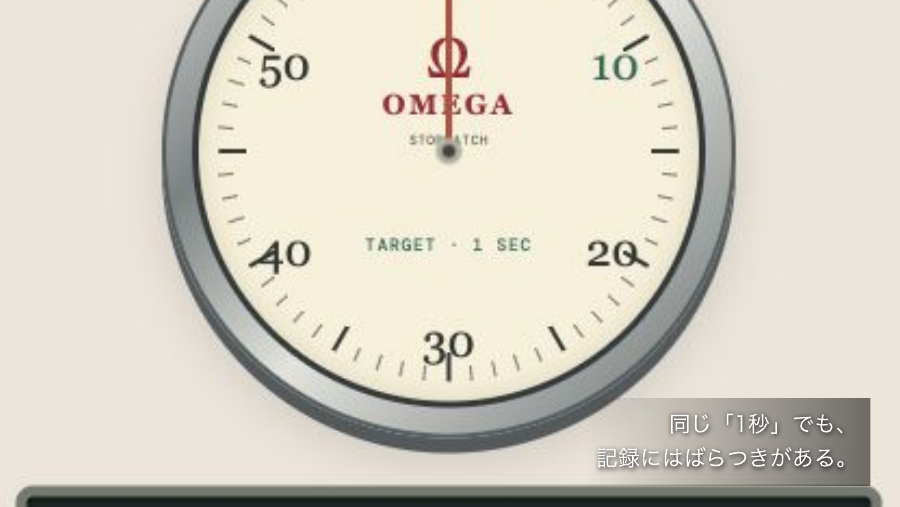
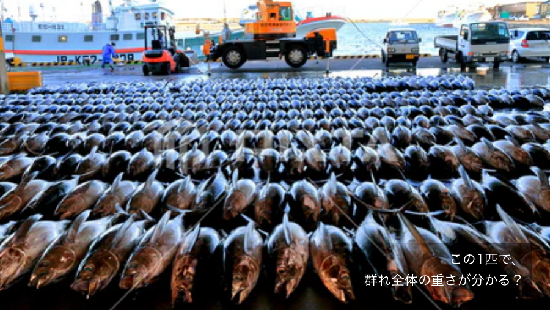
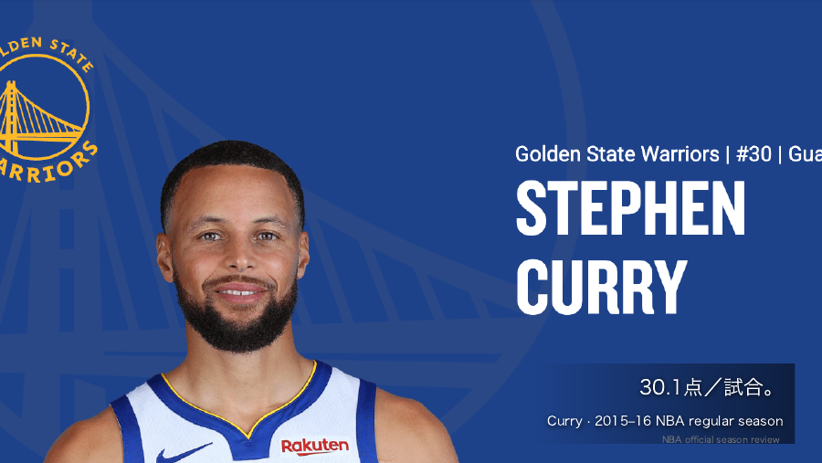
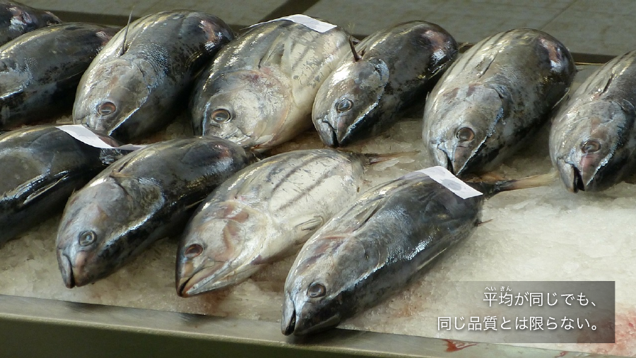

第7〜13週の授業準備Weeks 7–13 · First-pass lecture sequence
ストーリー → 具体例 → 大きな公式 → 自分で解く → 図で答え合わせ → AL。
各週の講義ノートはスライドの下に表示。演習は独立した新しい問題で、宿題の解答ではありません。第14週はUNIPAの試験案内を確認します。

Week 7 · 標準化と分散を、自分で使う
不偏分散・Z・右側の面積。後半は独立したAL。
35枚 ／ 授業内チャレンジ2問 ／ 探索2個
100分の進め方と、任意の活動
導入と問い：8分。具体例・公式・探索：35分。各自のチャレンジと答え合わせ：25分。残りはAL・振り返り。
AL中心の第7・10週は、後半25分以上を独立した作業に。長い証明、追加データ、探索の100回追加、最後の発展問題は任意。

Week 8 · 1匹から、群れを考える
魚の平均から、母数・推定量・不偏性・有効性・一致性へ。
40枚 ／ 授業内チャレンジ2問 ／ 探索3個
100分の進め方と、任意の活動
導入と問い：8分。具体例・公式・探索：35分。各自のチャレンジと答え合わせ：25分。残りはAL・振り返り。
AL中心の第7・10週は、後半25分以上を独立した作業に。長い証明、追加データ、探索の100回追加、最後の発展問題は任意。

Week 9 · 30点。でも、どれくらい確か？
Curryの話から、母平均と母分散の信頼区間へ。
36枚 ／ 授業内チャレンジ2問 ／ 探索3個
100分の進め方と、任意の活動
導入と問い：8分。具体例・公式・探索：35分。各自のチャレンジと答え合わせ：25分。残りはAL・振り返り。
AL中心の第7・10週は、後半25分以上を独立した作業に。長い証明、追加データ、探索の100回追加、最後の発展問題は任意。

Week 10 · 何を推定するかで、式を選ぶ
条件を読んでZ・t・χ²を選び、ALへ進む。
31枚 ／ 授業内チャレンジ3問 ／ 探索3個
100分の進め方と、任意の活動
導入と問い：8分。具体例・公式・探索：35分。各自のチャレンジと答え合わせ：25分。残りはAL・振り返り。
AL中心の第7・10週は、後半25分以上を独立した作業に。長い証明、追加データ、探索の100回追加、最後の発展問題は任意。
Week 11 · その「説」、偶然でも起こる？
紅茶の実験から、7つの手順・T・母比率の差・p値へ。
38枚 ／ 授業内チャレンジ2問 ／ 探索3個
100分の進め方と、任意の活動
導入と問い：8分。具体例・公式・探索：35分。各自のチャレンジと答え合わせ：25分。残りはAL・振り返り。
AL中心の第7・10週は、後半25分以上を独立した作業に。長い証明、追加データ、探索の100回追加、最後の発展問題は任意。
Week 12 · よく出る選手は、よく得点する？
GaltonからNBAの散布図、回帰式、Excel出力の読み方へ。
35枚 ／ 授業内チャレンジ2問 ／ 探索3個
100分の進め方と、任意の活動
導入と問い：8分。具体例・公式・探索：35分。各自のチャレンジと答え合わせ：25分。残りはAL・振り返り。
AL中心の第7・10週は、後半25分以上を独立した作業に。長い証明、追加データ、探索の100回追加、最後の発展問題は任意。
Week 13 · その結論、言い過ぎていない？
7つの誤解を点検し、新しい数値で学期全体を復習。
43枚 ／ 授業内チャレンジ3問 ／ 探索2個
100分の進め方と、任意の活動
導入と問い：8分。具体例・公式・探索：35分。各自のチャレンジと答え合わせ：25分。残りはAL・振り返り。
AL中心の第7・10週は、後半25分以上を独立した作業に。長い証明、追加データ、探索の100回追加、最後の発展問題は任意。